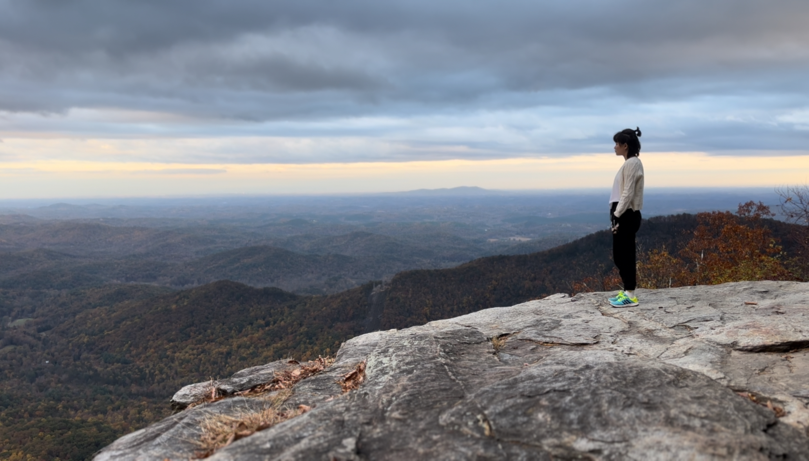
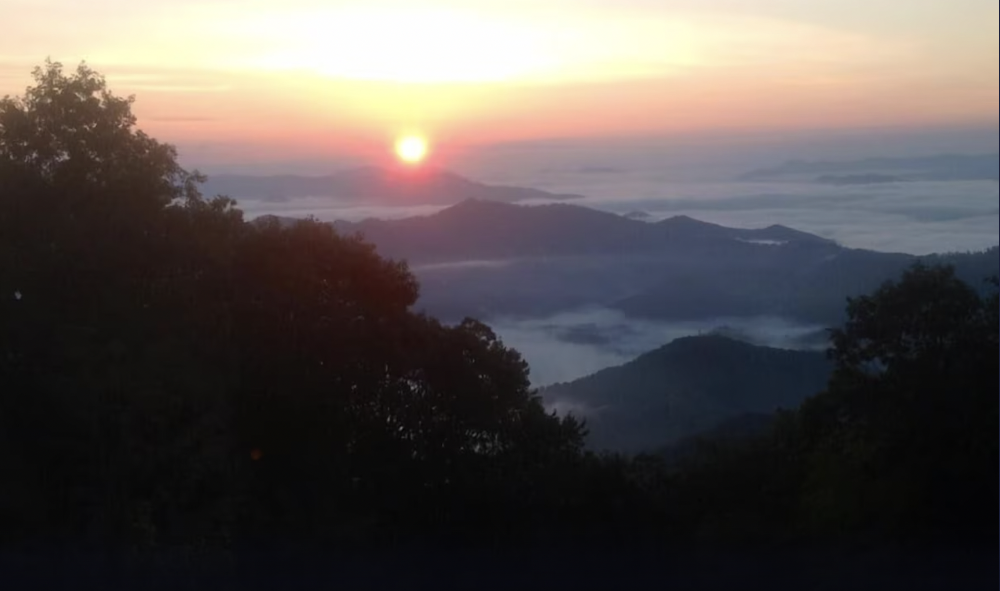
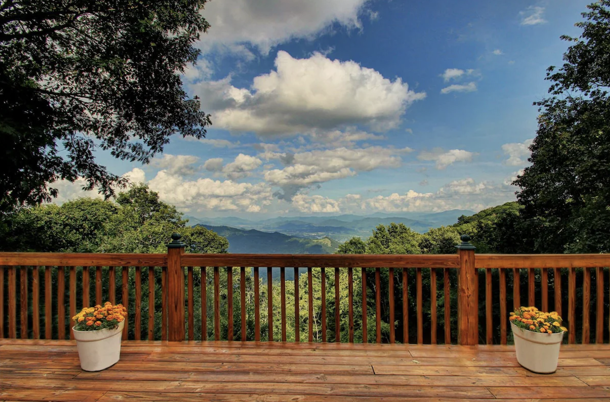
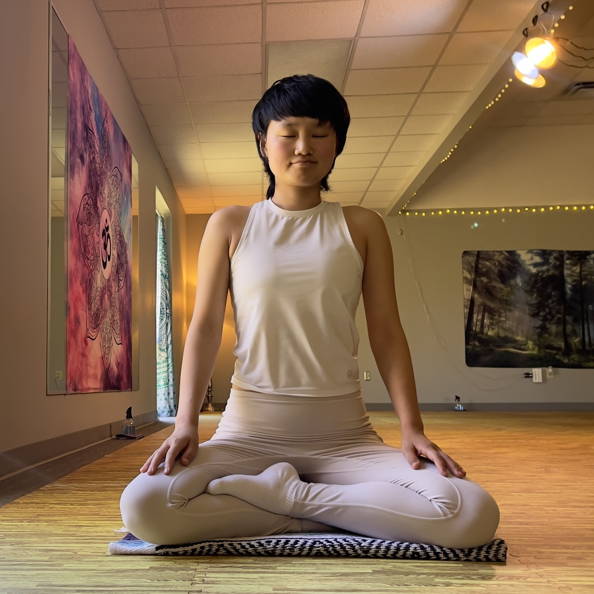

Phoenix Silent Retreats
A day of silence, movement, and meditation — wherever I travel.
Daylong Silent Yoga & Meditation Retreats with Ginger Phoenix
Our Lineage
Our lineage draws inspiration from the multifaceted path of Yoga, the profound stillness of Chan (Zen) Buddhism, and the clarity of Vipassana meditation. We integrate embodied practices, the resonant power of mantra, and the direct insight of Vipassana to cultivate mindful presence, a luminous heart, and deep self-understanding.
The practices woven through every retreat:
Ānāpānasati — mindfulness of breathing
A basic yet powerful practice: resting attention on the breath to settle body and mind.
Vipassanā — insight meditation
Seeing experience clearly as it arises, explained plainly and practiced in silence.
Mettā — loving-kindness
Strengthening feelings of compassion, kindness, and acceptance toward oneself and others.
Mozhao — Silent Illumination
From the Chan tradition: silence, because we are originally free from all narratives and constructs of self; illumination, the natural functioning of the mind and its openness.
Walking & eating meditation
Silence carried into movement and meals — the retreat does not end when you stand up from the cushion.
Noble Silence
This silence is considered noble because it is undertaken with mindfulness and respect for oneself and others. It is not merely the absence of speech, but also the minimizing of non-verbal communication — gestures, eye contact, and other forms of interpersonal exchange. All electronic devices are turned off and stored away together in a safe space for the day.
Noble Silence fosters deep introspection, respect for others' inner journeys, reduces external stimuli, and enhances awareness.
Whether it's your first or your tenth time attending a silent retreat, the idea of entering silence may seem daunting. This is normal. It will pass. We are here to make sure your retreat experience is a time for refuge and deeper understanding.
The Daylong Retreat
A full day of silence, 8:00 AM – 4:00 PM, limited to a small group. This is the actual schedule from our daylong silent meditation retreats:
- 8:00 AM Arrive, check-in, and first sit
- 9:00 Orientation & Q&A
- 9:30 Sitting meditation
- 10:30 Mindful yin yoga
- 11:00 Sitting meditation
- 11:50 Personal time — tea break
- 12:00 PM Eating meditation & clean-up
- 12:30 Walking meditation & direct contemplation (outdoors)
- 1:30 Sitting meditation
- 2:30 Gentle mindful yoga
- 3:30 Dharma talk & Q&A
- 4:00 Closing

Good to know: phones are relinquished for the day (family can reach the host studio in an emergency). These practices have been handed down through cultures and across continents for 2,500 years — people of any faith, or none, are welcome. Through dedicated practice and retreat experience, you may uncover greater clarity, wisdom, resiliency, and inner stability.
Multi-Day Mountain Retreats

Our multi-day silent retreats are held in the Blue Ridge Mountains — including a mountain property in Maggie Valley, NC, at an elevation exceeding 5,100 ft, a serene haven for those seeking inner peace and rejuvenation. Days begin with the 5:30 AM wake-up bell and move through group chanting, silent and guided sits, dharma talks, yoga, walking meditation, working meditation, and an evening sharing circle — concluding with a hike in Great Smoky Mountains National Park.
To keep extended retreats accessible to everyone, the fee covers accommodation and meals; the teachings are offered on a voluntary, donation (dana) basis.



About Ginger Phoenix

- Hosting and leading silent retreats since 2022 — numerous daylong retreats, plus many 3-day and 5-day retreats in the Blue Ridge Mountains
- Trauma-informed teaching, with a strong emphasis on holding space safely
- Trained mainly in the Chan / Zen tradition — Ānāpānasati, Vipassanā, and Mettā Bhāvanā — and with Tibetan Buddhist teachers; has sat many silent retreats of 7+ days
- Lead Trainer of a 200-hour Yoga Teacher Training program since 2023, teaching with reference to the Yoga Sūtra
- Owner & Lead Teacher/Trainer, Yogaunme — Spartanburg, SC (founded 2019), offering 6+ daily yoga and meditation classes and meditation retreats on a regular basis
Upcoming Retreats
Austin, TX — Saturday, December 26 or Sunday, December 27, 2026
Daylong silent retreat, hosted in collaboration with a local Austin studio. Venue to be announced. Interested in attending or hosting? Get in touch below.
NC Mountains — March 19–21, 2027
A weekend meditation retreat in the North Carolina mountains, Friday evening to Sunday noon. Bookings are open now — a $50 deposit holds your place, and the exact mountain location is shared with guests the week of the retreat.
Host a Retreat in Your City
Phoenix Silent Retreats travels. The model is collaboration, not rental: you provide the space and local promotion/registration, I provide the full program and teaching, and we split ticket revenue 50/50 — no upfront cost to either side.
Watch & Listen
Contact
Ginger Phoenix · Phoenix Silent Retreats
yogaunme@gmail.com · (864) 707-7252 · Spartanburg, SC